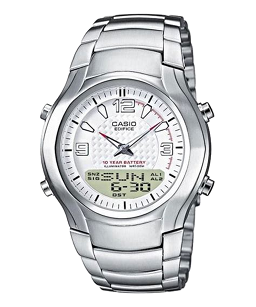

Всем кто не может разобраться с настройкой механических стрелок на циферблате: все просто.
В часах Casio Edifice есть несколько режимов работы, которые переключаются "по кругу" левой нижней кнопкой. Основной режим работы - это режим текущего времени. При переключении кнопкой, вход в этот основной режим сопровождается более высоким "писком", которые выдают часы при каждом нажатии. В основном режиме часы показывают либо текущее время, либо текущую дату (переключение отображения "время" или "дата" производится левой верхней кнопкой).

Для перемещения стрелок, необходимо перевести часы в режим аналогового времени. Для этого, если часы у вас в режиме текущего времени, нужно нажать на левую нижнюю клавишу шесть раз. (Число нажатий зависит от модели, но, обычно, режим аналогового времени находится самым "последним", а после него идет снова режим текущего времени, так как режимы переключаются по кругу).
Например:
Теперь когда ваши часики переведены в режим этого аналогового времени, нажмите и держите левую верхнюю клавишу. Держите пока с вашего экрана не исчезнут показатели секунд. Как только останутся минуты и часы, а секунды исчезнут - значит началась настройка. На некоторых моделях текущее время начинает мигать.
Быстрое вращение стрелок
Теперь нажав нижнюю левую клавишу (кнопки у меня например тугие и я рекомендую нажимать сильнее и продолжительнее) можно заставить двигаться минутную стрелку в направлении "по часовой стрелке". На некоторых моделях, для движения стрелки используется правая нижняя кнопка. А если при нажатой клавише нажать одновременно еще и противоположную (противоположную по горизнтали), а затем обе отпустить то стрелка продолжит вращение по кругу. Остановить это вращение на нужном вам делении можно любой клавишей.
Медленное вращение стрелок
Это мы разобрали быстрое вращение. А медленное (каждое нажатие шаг 20 секунд) достигается однократным нажатием правой нижней клавиши (это уже точная подстройка механических стрелок под цифровой показатель). Ну да разберетесь. Что же касается режима автоподсветки, то это совсем просто. Я тоже сначала решил что она не работает. В инструкции сказано, что для активизации этого дела, нужно из режима текущего времени нажать и удерживать в течении трех секунд нижнюю левую клавишу. Но на многих моделях это не так. Удерживать клавишу нужно секунд пять-шесть. Когда режим включится, в правом верхнем углу циферблата, точно над латинскими буквами, обозначающими день недели, загорится специальный значек внешне напоминающий растянутое в ширину ромбовидное солнышко.
Завершение настройки
Для завершения настройки нужно долго нажать левую верхнюю клавишу. При этом текущее время на жк-экранчике перестанет мигать.
К записи прикреплена полная инструкция на Casio Edifice AW-80, EFA-109 (EFA-112). В ней написано, как менять режим отображения времени с 12-часового на 24-часовой, и как устанавливать электронное время на цифровом табло.